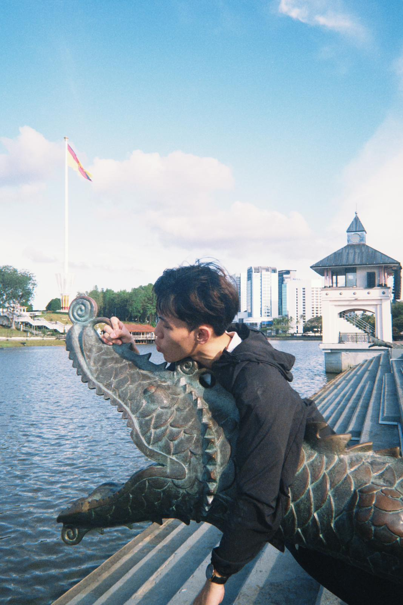
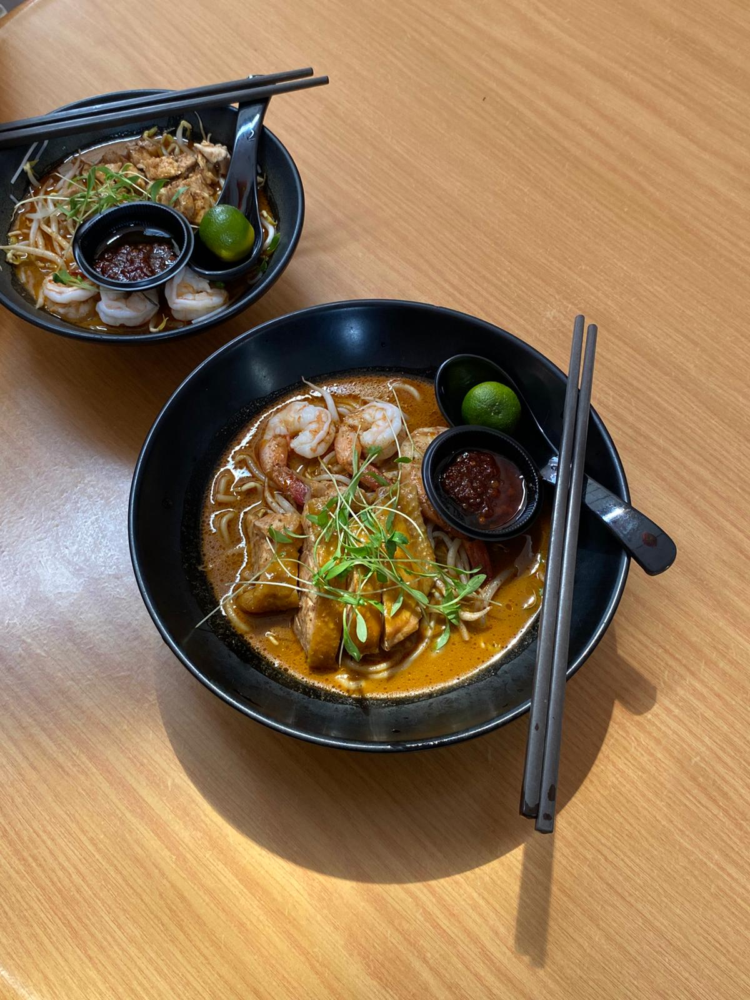
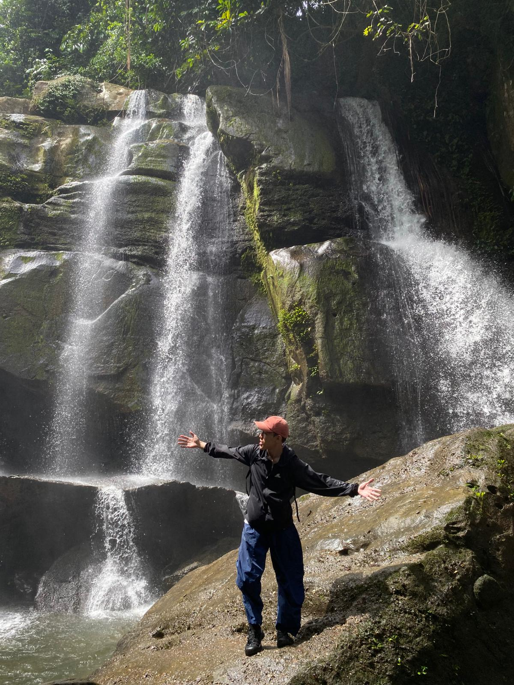
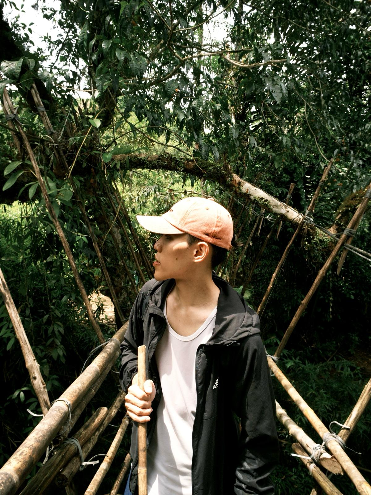

Borneo, Malaysia
A visual journey into the deep wild forest. Seen through the eyes of a traveler looking for true nature.
Kuching is the vibrant capital city of Sarawak, Malaysia. Known for its rich history, charming old streets, and iconic dishes like Sarawak Laksa, it is a place where modern city life blends with local culture and heritage.
But the real adventure begins beyond the city. About an hour from Kuching lies Padawan, home to Bengoh Dam. Originally built to supply water to the growing city, the dam also created a stunning reservoir surrounded by lush rainforest and towering mountains. The landscape feels almost prehistoric, like a hidden world untouched by time. This is where our journey begins—a peaceful boat ride across emerald-green waters into one of Sarawak's most beautiful natural escapes.


Walking deeper into the jungle, you will hear a loud noise. Soon, you find the beautiful Susung and Kling waterfalls. The sound of the falling water is so strong that you forget everything else.
Standing in front of these giant waterfalls, you can feel the cool water on your face. You look around at the big rocks covered in green moss. It makes you feel very small, but also very happy to see how amazing nature is.

Walking into this forest feels like stepping back in time. Giant trees and towering ferns rise above you, filtering the sunlight through layers of green. The rainforest feels ancient, mysterious, and almost untouched.
To cross the rivers, you walk across bamboo bridges built by the local Bidayuh community. Made from materials gathered from the surrounding forest, these simple yet remarkable structures have connected people to the land for generations. With every step on the bamboo, you feel a deeper connection to the traditions of Borneo and the wilderness that surrounds you.

"In a world that never stops moving, Bengoh Dam reminds us to slow down."
Beyond the reach of busy streets and constant notifications, the rainforest offers a different rhythm—one shaped by flowing water, ancient trees, and the sounds of nature. The trek may leave your legs tired, but it rewards you with something far more valuable: a moment of peace, a clearer mind, and memories that stay with you long after you leave the forest behind.